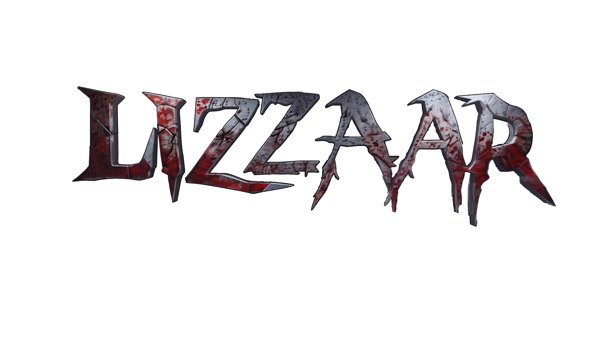
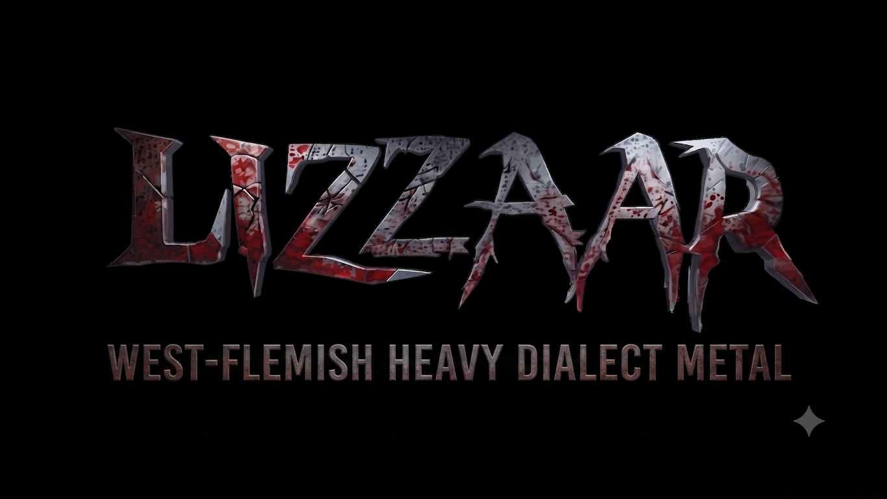
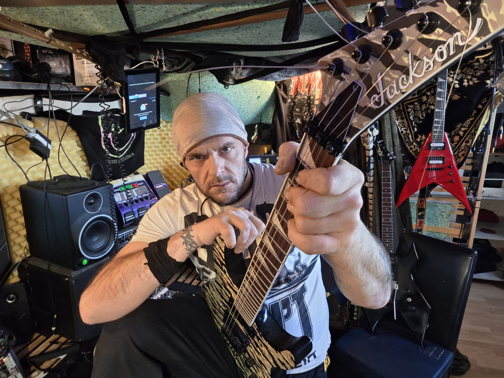
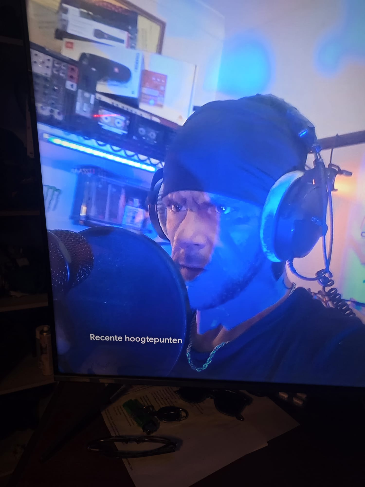
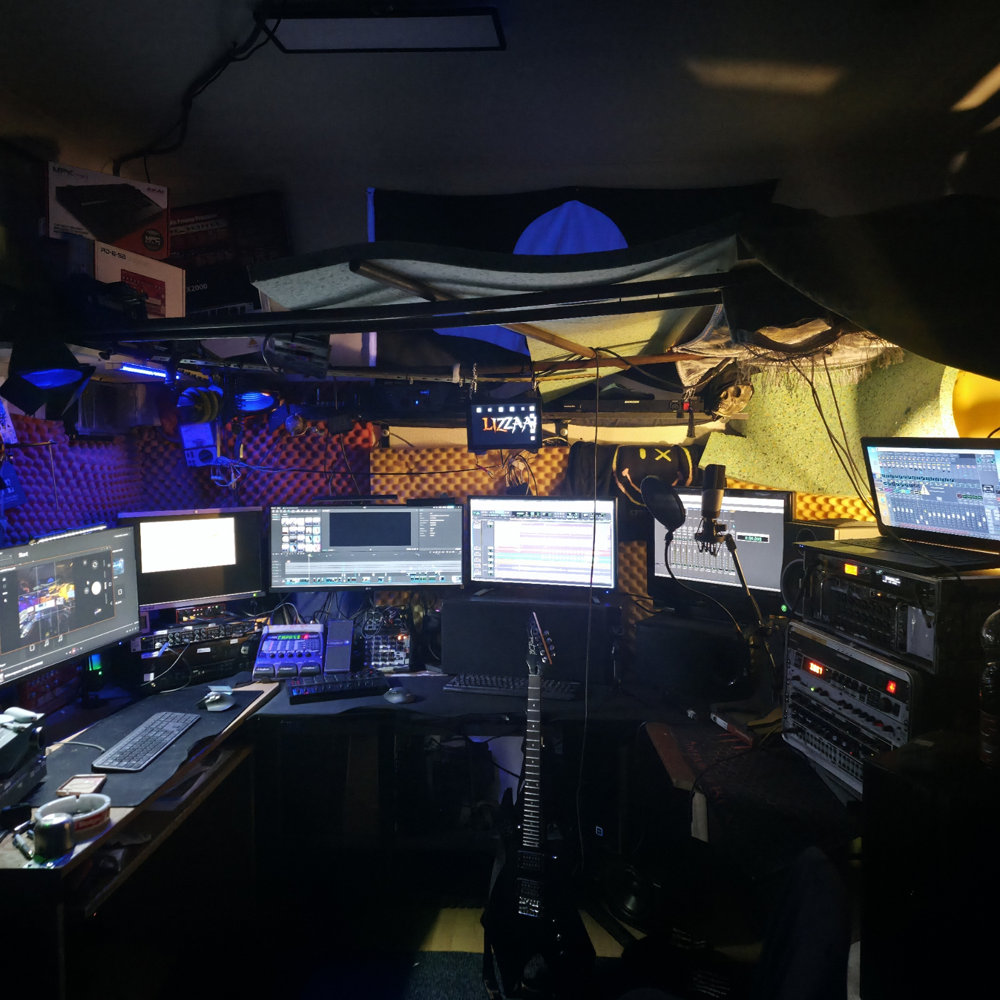
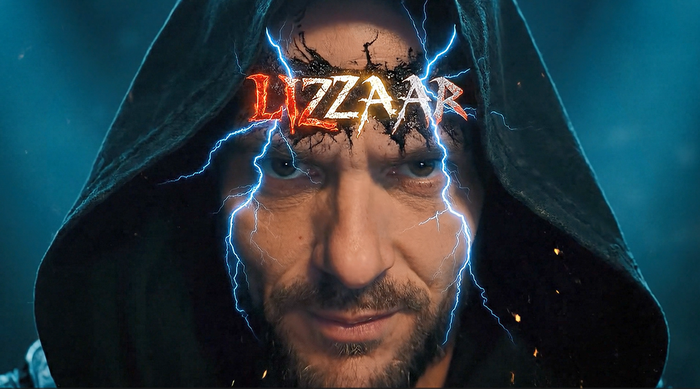
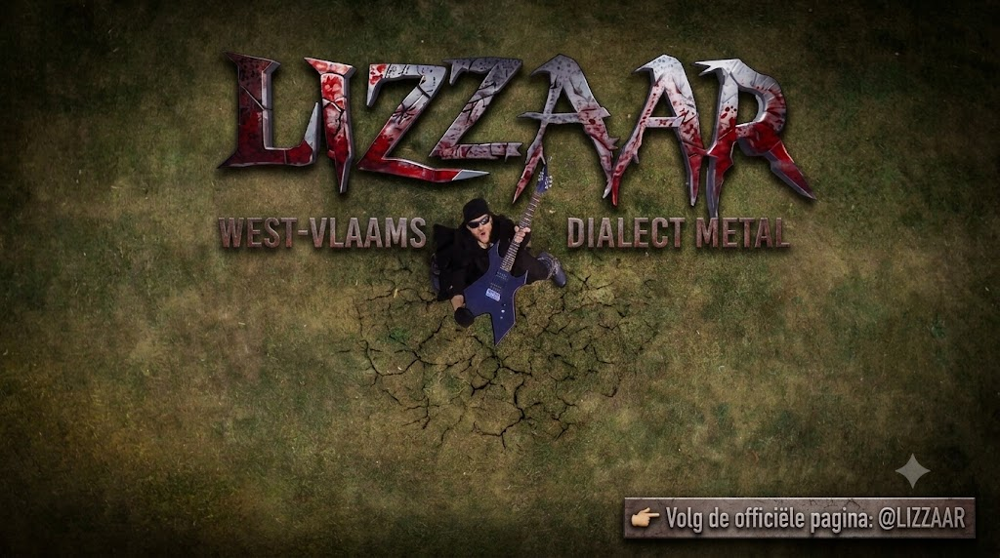
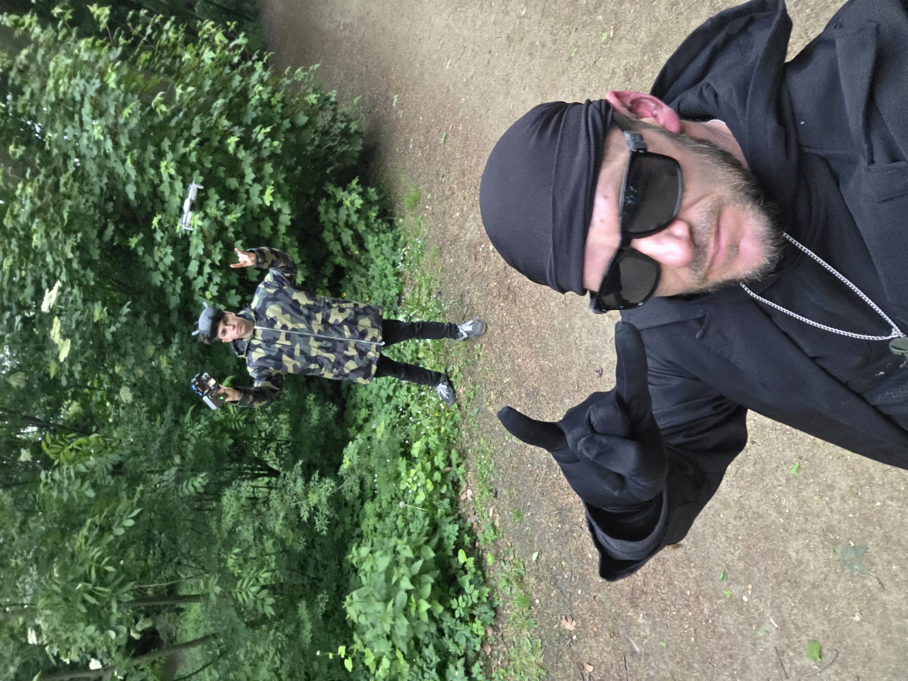

Rauwe universele metalmuziek, West-Vlaamse zang
Bio
West-Vlaamse Dialect-Metal
LIZZAAR is het manifeste geluid van een solo metalproject gedreven door verzet, rauwe energie en het gevecht tegen innerlijke demonen — maar evenzeer een ode aan de ontwakende innerlijke kracht en de alliantie met diens Goden. Welkom in een muzikaal laboratorium dat beweegt tussen verschillende dimensies, spouwend op een nietsontziende en egoïstische maatschappij. Met herkenbare teksten raakt LIZZAAR alle sensitieve gevoelssnaren aan: van sfeervolle, cinematische soundscapes tot meedogenloze deathcore. Een onbegrensd decor waarin integriteit, kwetsbare emotionele pijnpunten en duisternis ongenadig met elkaar dansen en botsen.
Het West-Vlaams als Veelzijdig Instrument
Het West-Vlaams is niet zomaar een taal, maar een volwaardig muzikaal instrument. De unieke fonetiek, rijke stemklanken en karakteristieke dynamiek van het dialect worden op talloze manieren ingezet — waarbij stemklanken regelmatig traditionele instrumenten vervangen. Ze versterken de zwaarte en emotie van de muziek en geven LIZZAAR een volstrekt eigen, herkenbare identiteit.
Momenteel wordt er achter de schermen gebouwd aan een live-format met volledige band en gastmuzikanten om de studio-emotie naar het podium te vertalen.
Luister, steun, volg, kom af en vervoeg de gelederen!
Video's
Eindgeneriek — LIZZAAR Projects
Intro
Intro Logo
Foto's









Muziek
Selecteer een track
Booking & Contact
Mail: info@lizzaar.com